방어구
투구32
| 아이템 | AC | 효과 | 재질 | 무게 | 클래스 | 착용레벨 | 안전인첸 |
|---|---|---|---|---|---|---|---|
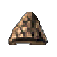 가죽모자 | 0 | 세트(4) AC -3 | 가죽 | 10 | 0 | 0~4강 | |
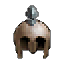 가죽투구 | -1 | — | 가죽 | 30 | 0 | 0~4강 | |
| 강철 면갑 | -3 | 세트(5) AC -3 | 철 | 50 | 0 | 0~4강 | |
| 기사의 두건 | -1 | — | 천 | 0 | 0 | 인첸불가 | |
| -3 | — | 철 | 40 | 0 | 0~4강 | ||
| 난쟁이족 철 투구 | -2 | 세트(3) AC -1, 최대 HP +5 | 철 | 40 | 0 | 0~4강 | |
| -3 | 세트(4) AC -4, 데스나이트 변신 | 철 | 50 | 0 | 0~4강 | ||
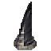 마법사 모자 | -2 | 세트(2) MP회복 +1, 최대 MP +50 | 천 | 20 | 0 | 0~4강 | |
| -1 | 미스릴 | 50 | 0 | 0~4강 | |||
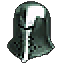 마법의 투구: 치유 | -1 | 미스릴 | 50 | 0 | 0~4강 | ||
| -1 | 미스릴 | 50 | 0 | 0~4강 | |||
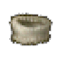 맘보 모자 | +1 | CHA +1 | 가죽 | 10 | 0 | 0~4강 | |
| 메르키오르의 모자 | -2 | INT +1 | 천 | 20 | 0 | 0~4강 | |
| -1 | DEX +1 | 가죽 | 13 | 15 | 0~6강 | ||
| -3 | 세트(4) HP회복 +7, AC -3, 켄 라우헬 변신 | 금 | 15 | 0 | 0~4강 | ||
| -2 | MP회복 +5 | 천 | 20 | 0 | 0~4강 | ||
| -2 | — | 천 | 20 | 0 | 0~6강 | ||
| -2 | MP회복 +2, 최대 MP +15 | 천 | 20 | 0 | 0~4강 | ||
| -2 | DEX +1 | 가죽 | 13 | 0 | 0~6강 | ||
| 오크족 투구 | -1 | 세트(4) AC -3 | 철 | 30 | 0 | 0~4강 | |
| 요정족 가죽 투구 | -1 | — | 가죽 | 3 | 0 | 0~6강 | |
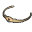 정화의 머리띠 | 0 | 오염된 바람 정령 시야 | 보석 | 0 | 0 | 인첸불가 | |
| 징박은 가죽모자 | -2 | 세트(4) AC -3 | 가죽 | 20 | 0 | 0~4강 | |
| -3 | 세트(4) AC -7 | 가죽 | 20 | 0 | 0~4강 | ||
| -1 | CON +1 | 가죽 | 13 | 15 | 0~6강 | ||
| -2 | 최대 MP +25 | 천 | 20 | 0 | 0~4강 | ||
| 커츠의 투구 | -3 | 세트(4) AC -4, 커츠 변신 | 철 | 50 | 0 | 0~4강 | |
| -3 | 세트(4) MP회복 +12, AC -2, 최대 MP +100, 케레니스 변신 | 백금 | 5 | 0 | 0~4강 | ||
| -2 | — | 철 | 30 | 0 | 0~4강 | ||
| -2 | MR +4 | 철 | 35 | 0 | 0~4강 | ||
| -2 | 세트(4) INT +1, AC -1, 최대 HP +10 | 가죽 | 15 | 0 | 0~4강 | ||
| 해골투구 | -3 | 세트(3) AC -2, 최대 HP +10 | 뼈 | 30 | 0 | 0 |
갑옷52
| 아이템 | AC | 효과 | 재질 | 무게 | 클래스 | 착용레벨 | 안전인첸 |
|---|---|---|---|---|---|---|---|
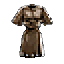 가죽 갑옷 | -2 | — | 가죽 | 70 | 0 | 0~4강 | |
| -1 | — | 가죽 | 30 | 0 | 0~4강 | ||
| -1 | 세트(4) AC -3 | 가죽 | 30 | 0 | 0~4강 | ||
| -7 | 세트(5) AC -3 | 철 | 470 | 0 | 0~4강 | ||
| 고대의 가죽 갑옷 | -14 | HP회복 +3, MP회복 +5 | 가죽 | 180 | 40 | 인첸불가 | |
| -12 | MP회복 +8 | 천 | 30 | 40 | 인첸불가 | ||
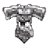 고대의 비늘 갑옷 | -14 | HP회복 +5, MP회복 +3 | 용가죽 | 200 | 40 | 인첸불가 | |
| 고대의 판금 갑옷 | -16 | HP회복 +1 | 철 | 280 | 40 | 인첸불가 | |
| -3 | — | 철 | 250 | 0 | 0~4강 | ||
| -3 | — | 나무 | 80 | 0 | 0~4강 | ||
| 나무 줄기 옷 | -1 | — | 나무 | 40 | 0 | 0~4강 | |
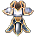 데스나이트의 갑옷 | -7 | 세트(4) AC -4, 데스나이트 변신 | 철 | 250 | 0 | 0~4강 | |
| 띠 갑옷 | -6 | — | 철 | 350 | 0 | 0~4강 | |
| 린드비오르의 마갑주 | -11 | HP회복 +2, 대미지 감소 +1, 바람 속성 저항력 증가 +30 | 용가죽 | 250 | 0 | 0~4강 | |
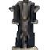 마법사 옷 | -3 | 세트(2) MP회복 +1, 최대 MP +50 | 천 | 60 | 0 | 0~4강 | |
| -3 | CHA +2, STR -1, 물 속성 저항력 증가 +10, 불 속성 저항력 증가 -10 | 가죽 | 10 | 0 | 0~4강 | ||
| 무명 로브 | -2 | MR +4 | 천 | 10 | 0 | 0~4강 | |
| -6 | — | 철 | 400 | 0 | 0~4강 | ||
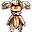 반왕의 갑옷 | -8 | 세트(4) HP회복 +7, AC -3, 켄 라우헬 변신 | 금 | 180 | 0 | 0~4강 | |
| 발라카스의 마갑주 | -11 | HP회복 +2, 대미지 감소 +1, 불 속성 저항력 증가 +30 | 용가죽 | 250 | 0 | 0~4강 | |
| 벨트달린 가죽조끼 | -3 | — | 가죽 | 50 | 0 | 0~4강 | |
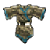 비늘 갑옷 | -4 | — | 철 | 250 | 0 | 0~4강 | |
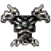 뼈갑옷 | -5 | 세트(3) AC -2, 최대 HP +10 | 뼈 | 150 | 0 | 0 | |
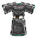 사슬 갑옷 | -5 | — | 철 | 300 | 0 | 0~4강 | |
| -5 | MR +4 | 철 | 300 | 0 | 0~4강 | ||
| 수룡 비늘 갑옷 | -9 | 물 속성 저항력 증가 +20 | 용가죽 | 300 | 0 | 0~4강 | |
| -8 | — | 보석 | 350 | 0 | 0~4강 | ||
| -11 | HP회복 +2, 대미지 감소 +1, 땅 속성 저항력 증가 +30 | 용가죽 | 250 | 0 | 0~4강 | ||
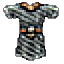 오크족 고리 갑옷 | -2 | 세트(4) AC -3 | 철 | 250 | 0 | 0~4강 | |
| -4 | — | 철 | 300 | 0 | 0~4강 | ||
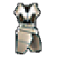 요정족 사슬 갑옷 | -5 | — | 미스릴 | 150 | 0 | 0~6강 | |
| -6 | — | 오리하루콘 | 250 | 0 | 0~6강 | ||
| -4 | — | 미스릴 | 100 | 0 | 0~6강 | ||
| 잊혀진 가죽 갑옷 | -1 | — | 가죽 | 200 | 40 | 인첸불가 | |
| 잊혀진 로브 | -1 | — | 천 | 50 | 40 | 인첸불가 | |
| 잊혀진 비늘 갑옷 | -1 | — | 용가죽 | 250 | 40 | 인첸불가 | |
| -1 | — | 철 | 300 | 40 | 인첸불가 | ||
| 중갑가죽조끼 | -3 | — | 가죽 | 150 | 0 | 0~4강 | |
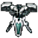 지룡 비늘 갑옷 | -9 | 땅 속성 저항력 증가 +20 | 용가죽 | 300 | 0 | 0~4강 | |
| 징박은 가죽조끼 | -2 | 세트(4) AC -3 | 가죽 | 130 | 0 | 0~4강 | |
| -3 | — | 가죽 | 150 | 0 | 0~4강 | ||
| 짙푸른 해적 가죽갑옷 | -7 | 세트(4) AC -7 | 가죽 | 160 | 0 | 0~4강 | |
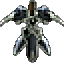 청동 판금 갑옷 | -6 | — | 구리 | 450 | 0 | 0~4강 | |
| -7 | 세트(4) AC -4, 커츠 변신 | 철 | 250 | 0 | 0~4강 | ||
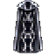 케레니스의 로브 | -5 | 세트(4) MP회복 +12, AC -2, 최대 MP +100, 케레니스 변신 | 은 | 85 | 0 | 0~4강 | |
| -11 | HP회복 +2, 대미지 감소 +1, 물 속성 저항력 증가 +30 | 용가죽 | 250 | 0 | 0~4강 | ||
| 판금 갑옷 | -7 | — | 철 | 450 | 0 | 0~4강 | |
| -5 | 세트(4) INT +1, AC -1, 최대 HP +10 | 가죽 | 150 | 0 | 0~4강 | ||
| -9 | 바람 속성 저항력 증가 +20 | 용가죽 | 300 | 0 | 0~4강 | ||
| -6 | HP회복 +3, MP회복 +2, 최대 HP +10, 최대 MP +10 | 나무 | 220 | 0 | 0~4강 | ||
| 화룡 비늘 갑옷 | -9 | 불 속성 저항력 증가 +20 | 용가죽 | 300 | 0 | 0~4강 | |
| -5 | MP회복 +5, 최대 MP +50 | 천 | 30 | 0 | 0~4강 |
티셔츠2
| 아이템 | AC | 효과 | 재질 | 무게 | 클래스 | 착용레벨 | 안전인첸 |
|---|---|---|---|---|---|---|---|
| 0 | — | 천 | 5 | 0 | 0~6강 | ||
| 0 | 갑옷 안 착용 | 천 | 5 | 0 | 0~4강 |
망토11
| 아이템 | AC | 효과 | 재질 | 무게 | 클래스 | 착용레벨 | 안전인첸 |
|---|---|---|---|---|---|---|---|
| 군주의 위엄 | -2 | CHA +1, CON +1, DEX +1, INT +1, STR +1, WIS +1 | 천 | 10 | 15 | 0~4강 | |
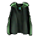 난쟁이족 망토 | 0 | 세트(3) AC -1, 최대 HP +5 | 천 | 10 | 0 | 0~4강 | |
| -2 | MP회복 +5 | 천 | 10 | 45 | 0~4강 | ||
| -1 | MR +10 | 천 | 10 | 0 | 0~4강 | ||
| -2 | CHA +1 | 천 | 10 | 0 | 0~4강 | ||
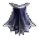 뱀파이어의 망토 | -2 | HP회복 +4, MR +3, 최대 HP +60 | 천 | 15 | 50 | 0~6강 | |
| 보호 망토 | -3 | — | 천 | 10 | 0 | 0~4강 | |
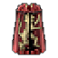 붉은 망토 | -2 | CHA +1 | 천 | 10 | 15 | 0~4강 | |
| 0 | 세트(4) AC -3 | 천 | 10 | 0 | 0~4강 | ||
| -1 | 요정 착용 시 HP회복 보너스 +1 | 천 | 10 | 0 | 0~6강 | ||
| -1 | 투명 | 천 | 10 | 5 | 0~4강 |
부츠18
| 아이템 | AC | 효과 | 재질 | 무게 | 클래스 | 착용레벨 | 안전인첸 |
|---|---|---|---|---|---|---|---|
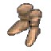 가죽부츠 | -2 | — | 가죽 | 10 | 0 | 0~4강 | |
| 0 | 세트(4) AC -3 | 가죽 | 8 | 0 | 0~4강 | ||
| 강철 부츠 | -3 | 세트(5) AC -3 | 철 | 50 | 0 | 0~4강 | |
| 데스나이트의 부츠 | -3 | 세트(4) AC -4, 데스나이트 변신 | 철 | 15 | 0 | 0~4강 | |
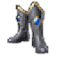 마나의 부츠 | -3 | MP회복 +2 | 가죽 | 15 | 0 | 0~4강 | |
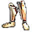 반왕의 부츠 | -3 | 세트(4) HP회복 +7, AC -3, 켄 라우헬 변신 | 금 | 12 | 0 | 0~4강 | |
| 부츠 | -2 | — | 가죽 | 15 | 0 | 0~4강 | |
| -3 | 원거리 명중 +1 | 가죽 | 15 | 0 | 0~4강 | ||
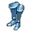 수중 부츠 | -2 | MP회복 +1, 수중 호흡 가능 | 가죽 | 15 | 0 | 0~4강 | |
| -3 | CHA +1 | 가죽 | 15 | 0 | 0~4강 | ||
| -3 | 근거리 명중 +1 | 가죽 | 15 | 0 | 0~4강 | ||
| -1 | 세트(4) AC -3 | 가죽 | 10 | 0 | 0~4강 | ||
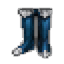 짙푸른 해적 부츠 | -3 | 세트(4) AC -7 | 가죽 | 20 | 0 | 0~4강 | |
| -1 | — | 가죽 | 10 | 0 | 0~4강 | ||
| 커츠의 부츠 | -3 | 세트(4) AC -4, 커츠 변신 | 철 | 15 | 0 | 0~4강 | |
| -2 | 세트(4) MP회복 +12, AC -2, 최대 MP +100, 케레니스 변신 | 가죽 | 15 | 0 | 0~4강 | ||
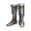 푸른 해적 부츠 | -2 | 세트(4) INT +1, AC -1, 최대 HP +10 | 가죽 | 15 | 0 | 0~4강 | |
| -2 | MP회복 +5, 최대 MP +25 | 가죽 | 10 | 0 | 0~4강 |
장갑17
| 아이템 | AC | 효과 | 재질 | 무게 | 클래스 | 착용레벨 | 안전인첸 |
|---|---|---|---|---|---|---|---|
| 강철 장갑 | -1 | 세트(5) AC -3 | 철 | 40 | 0 | 0~4강 | |
| -2 | 세트(4) AC -4, 데스나이트 변신 | 철 | 15 | 0 | 0~4강 | ||
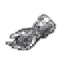 돌 장갑 | -3 | 대미지 감소 +1 | 광물 | 50 | 0 | 0~4강 | |
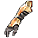 반왕의 건틀릿 | -2 | 세트(4) HP회복 +7, AC -3, 켄 라우헬 변신 | 금 | 10 | 0 | 0~4강 | |
| 0 | 최대 HP +20, 최대 MP +10 | 가죽 | 10 | 45 | 0~4강 | ||
| 0 | MP회복 +1, STR +1, 물 속성 저항력 증가 +4 | 가죽 | 18 | 0 | 0~4강 | ||
| -3 | — | 보석 | 20 | 0 | 0~4강 | ||
| 0 | MP회복 +1, STR +1, 땅 속성 저항력 증가 +4 | 가죽 | 18 | 0 | 0~4강 | ||
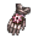 염령의 장갑 | 0 | MP회복 +1, STR +1, 불 속성 저항력 증가 +4 | 가죽 | 18 | 0 | 0~4강 | |
| 장갑 | 0 | — | 가죽 | 10 | 0 | 0~4강 | |
| 짙푸른 해적 장갑 | -2 | 세트(4) AC -7 | 가죽 | 20 | 0 | 0~4강 | |
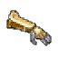 커츠의 장갑 | -2 | 세트(4) AC -4, 커츠 변신 | 철 | 15 | 0 | 0~4강 | |
| -1 | 세트(4) MP회복 +12, AC -2, 최대 MP +100, 케레니스 변신 | 가죽 | 8 | 0 | 0~4강 | ||
| 0 | STR +2 | 가죽 | 18 | 0 | 0~4강 | ||
| -1 | 세트(4) INT +1, AC -1, 최대 HP +10 | 가죽 | 15 | 0 | 0~4강 | ||
| 0 | MP회복 +1, STR +1, 바람 속성 저항력 증가 +4 | 가죽 | 18 | 0 | 0~4강 | ||
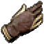 활 골무 | 0 | 원거리 명중 +2 | 가죽 | 10 | 0 | 0~4강 |
방패20
| 아이템 | AC | 효과 | 재질 | 무게 | 클래스 | 착용레벨 | 안전인첸 |
|---|---|---|---|---|---|---|---|
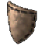 가죽방패 | -1 | 세트(4) AC -3 | 가죽 | 25 | 0 | 0~4강 | |
| -3 | 세트(5) AC -3 | 철 | 140 | 0 | 0~4강 | ||
| 골각방패 | -3 | 세트(3) AC -2, 최대 HP +10 | 뼈 | 30 | 0 | 0 | |
| 나무방패 | -1 | — | 나무 | 25 | 0 | 0~4강 | |
| -2 | 세트(3) AC -1, 최대 HP +5 | 철 | 100 | 0 | 0~4강 | ||
| 마나 수정구 | -2 | INT +1, 최대 MP +100 | 유리 | 50 | 0 | 0~4강 | |
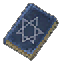 마력서 | -2 | INT +1 | 종이 | 20 | 15 | 0~4강 | |
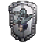 메두사 방패 | -2 | MR +5, 반사 효과 | 은 | 80 | 0 | 0~4강 | |
| 반사 방패 | -2 | 반사 효과 | 은 | 50 | 0 | 0~4강 | |
| 붉은 기사의 방패 | -2 | 반사 효과 | 은 | 50 | 0 | 0~6강 | |
| 사각 방패 | -3 | — | 철 | 120 | 0 | 0~4강 | |
| 시어의 심안 | -2 | INT +1, MP회복 +2, 반사 효과, 최대 MP +100 | 동물성 | 50 | 50 | 0~6강 | |
| -3 | 최대 HP +20, 헤이스트효과 | 은 | 50 | 40 | 0~4강 | ||
| -2 | 요정 착용 시 MR 보너스 +5 | 은 | 50 | 0 | 0~6강 | ||
| -1 | 세트(4) AC -3 | 철 | 50 | 0 | 0~4강 | ||
| 은기사의 방패 | -2 | MR +4 | 은 | 100 | 0 | 0~4강 | |
| 작은 방패 | -1 | — | 나무 | 30 | 0 | 0~4강 | |
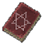 저주받은 마법서 | -1 | — | 종이 | 0 | 15 | 인첸불가 | |
| -2 | 세트(4) AC -3 | 가죽 | 35 | 0 | 0~4강 | ||
| -2 | — | 철 | 100 | 0 | 0~4강 |